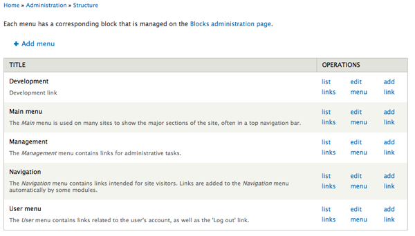
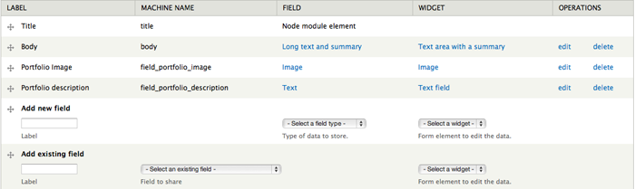
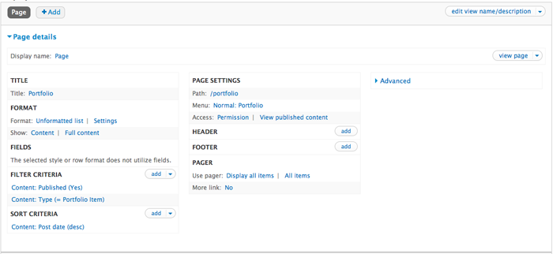

Overview
A Metro-inspired Drupal 7 theme powered by Zurb Foundation 3. Blocks features a fully responsive design, easy to use theme settings and follows Drupal coding standards. For theme support that cannot be found in this documentation, please visit our support forum. Once you have registered please contact us via the ThemeForest author page with your forum username so you can be granted posting rights.
Updated: 11/08/12
Author: Refaktor
Email: refaktor.co@gmail.com
Docs powered by: TOC
Installation
There are several ways Blocks can be installed. For existing sites that already have content, the first method will only involve the installation and activation of the theme. The second option includes a full Drupal 7 install with the same SQL database file used to create the theme demo. Please choose which installation method works best for you and follow the instructions.
Theme Only
Option 1:- Visit yourdomain.com/admin/appearance/install
- Upload the Blocks.zip file
- Enable and set to default
- Extract the Blocks.zip file and upload via FTP to /sites/all/themes
- Visit yourdomain.com/admin/appearance/
- Scroll down to "DISABLED THEMES" and set and enable Blocks
Full Drupal Install
The following steps are designed for people that have experience manually installing Drupal and importing databases. If you do not feel comfortable performing these steps yourself, contact your server administrator for help. NOTE this option is for a completely new Drupal install. Do not import the provided SQL file into an existing Drupal database or you will lose all of your data!
- Create a database for this installation of Drupal and import the SQL file that came with the theme.
- Follow these directions to create the settings.php file. Save this file somewhere so you can copy it over to the Drupal installation we have provided.
- Copy the entire contents of the Drupal_7 folder to the location on your web server where you want your site to be accessed. If you want your primary domain to point to your install of Blocks, copy everything to the root folder. If you want your site to be accessed as a subsection of your domain (for example: yourdomain.com/drupal) then simply rename the Drupal_7 folder to the desired name and upload to the root of your server. Also be sure to copy over the settings.php file mentioned in the previous step
- Login to your site with the username Steve and the password admin and visit /admin/people to change the admin username and password. The passwords for the three test users are the username and 1234, example: Frank1234
- Go through the Drupal configuration found in /admin/config options and update all the necessary information to reflect your website. Also be sure to visit /admin/config/media/file-system and change the Temporary Directory.
Menu
To edit your menu visit yourdomain.com/admin/structure/menu (pictured below)
Blocks uses the Main Menu. Press "List Links" to access the menu overview. From there you can add/remove links, and set the order.
NOTE:If you would like to use Blocks's built in drop down menu capability, make sure that the parent menu item (the one that indicates the drop down) has the "show as expanded" checkbox enabled.

To customize the styling of the menu you can edit the /css/style.css file and the /js/blocks.js file. The colors for the menu are controlled by the .menu_1 to .menu_6 classes, and more can be added by simply creating additional .menu_x classes. The icons are controlled by Javascript starting at line 129 of the blocks.js file.
Theme Settings
Blocks includes a powerful set of theme settings that allow you to configure many aspects of your site. They are organized in a series of tabbed menu items each with their own set of options. Simply click on the option heading to expand the full set of options. The Blocks theme options can be accessed by visiting yourdomain.com/admin/appearance/settings/blocks. All options have default values set, but you should go through each one and adjust them to your liking.
Front Page
By default Blocks uses a custom front page template that features several custom sections including the image slider. All of these sections are fully customizable and can also be disabled. You can use the theme settings to enable/disable any of these sections and set any necessary options. For full control of the front page template you can manually edit /includes/front-page.php
Image Slider
Blocks uses the jQuery OneByOne Slider Plugin for the main image slider. We have provided some simple theme settings to control the slider, or you can manually edit /includes/front-page.php to fully customize the slider. The CSS for the slider is found in the /css/sliders folder.
Services
This is a full-width portion on the front page designed to showcase site services and team members. If you would like to use the default content, simply edit /includes/front-page.php accordingly. You can also add a block using the Front Page Services block region.Highlight
The Highlight section allows you to advertise a specific page or aspect of your site. The settings for the Highlight section are in the Front Page tab of the theme settings. You can enter your own text and even include HTML.
Recent Posts
The recent posts section is a block region designed to showcase your site's most recent blog/article posts. Blocks uses a custom view template called node--view--front-page-blog--block.tpl to achieve the look and feel of this section seen on the demo. To properly use this section, either create a new view called Front Page Blog (machine name must be front_page_blog) with the desired number of blog/article teasers, or use the view export code found in /includes/view_exports/front-page-blog.txt
Recent Projects
The recent projects section is designed to showcase recent portfolio items in a carousel (see the Portfolio section of these docs for instructions on how to set up your portfolio items). This section utilizes a custom view template called node--view--recent-projects--block.tpl to achieve the look and feel seen on the demo. To properly use this section, make sure you have set up some portfolio items as described in the "Portfolio" section of the documentation. Once you have some portfolio items, either create a new view called Recent Projects (machine name must be recent_projects) with the number of portfolio items desired. To import the view used on the demo use the export code found in /includes/views_exports/recent-projects.txt
Widgets
Blocks includes styling and code for several widgets such as the faq, Twitter feed and quote rotator. See below for the necessary markup to use each kind of widget in a block or page
<div class='tweet query'></div>
<script type="text/javascript">
jQuery(document).ready(function ($) {
$(".tweet").tweet({
username: "envato",
avatar_size: 34,
count: 3,
loading_text: "loading tweets..."
});
});
</script>
FAQ
<ul class="faq">
<li class="divider"><h2 class="faq-head title-color gdl-title"><span class="faq-head-image active"></span>Title</h2>
<div class="faq-content">
faq Text
</div>
</li>
<li class="divider"><h2 class="faq-head title-color gdl-title"><span class="faq-head-image active"></span>Title</h2>
<div class="faq-content">
faq Text
</div>
</li>
</ul>
Ad Block
<div class="ad_block"> <a href="#">125 by 125</a><a href="#">125 by 125</a><a href="#">125 by 125</a><a href="#">125 by 125</a> </div>
Pricing
Blocks supports 2, 3 and 5 columns of pricing tables. Just change the span class to span5 for 2 columns, span3 for 3 columns and span2 for 5 columns.
<div class="span5 pricehover">
<h3>Starter</h3>
<div class="price"><h2>$50.00</h2></div>
<ul class="unstyled pricing ">
<li>2GB Space</li>
<li>500MB Data</li>
<li>1 User</li>
<li>1 Email</li>
</ul>
<button class="btn " >Buy Now</button>
<br><br>
</div>
<div class="span5 pricehover ">
<h3>Deluxe</h3>
<div class="price"><h2>$100.00</h2></div>
<ul class="unstyled pricing">
<li>5GB Space</li>
<li>2GB Data</li>
<li>5 Users</li>
<li>5 Emails</li>
</ul>
<button class="btn " >Buy Now</button>
<br><br>
</div>
Popular Tags
Use the Views module to create a block view titled "Popular Tags" that is an HTML list of the taxonomy term "Tags". You can set the number limit to whatever you like, just make sure to name it "Popular Tags" and to make it an HTML list.Portfolio
This portion of the docs will explain how to set up the portfolio page seen on the theme demo. The only module you will need is the Views module which is needed to create the list of portfolio items.
Custom content type
The first step is to create a new content type called Portfolio Item. To create a new content type visit /admin/structure/types and click "add content type". Title the new content type "Portfolio Item" (this is important), enter a brief description and save.
Next you have to add two custom fields to this content type for the portfolio image and description tags. Press the "manage fields" link under Portfolio Item in the content type overview page and use the "Add new field" option. Enter "Portfolio image" in the label field and select "Image" as the field type. Press save when you are done, and you will now have an image uploader when creating a Portfolio item. Do the same thing again, only this time use "Portfolio description" as the label and "Text" as the field type. This field lets you add short description words like "design" and "branding" to your portfolio items which show up when you hover over the images on the portfolio page. Here is what the fields for the "Portfolio Items" content type should look like when you are done:
Creating a portfolio item is as simple as creating any other content type. Visit /admin/content, click "Add content" and select the new Portfolio Item type you just created. Enter the title, text, upload your image and add your descriptive words and press save.
Portfolio View
To create a Portfolio page to display all of your portfolio items as seen on our demo, you will need to use the Views module. Once you have installed the module, visit /admin/structure/views and click "Add new view". Enter "Portfolio" into the view name text field, select Portfolio Item as the content type to pull from, make sure "create page" is checked off to make this a page view and tell it to pull an unformated list of full posts. You should also have it create a Menu link, but you can also do this later using the Menu options. If you would like to display three items per row instead of the default two, follow the same directions above but enter "Portfolio Three" into the view name text field (this will tell Drupal to call the three item per row Portfolio template). Below is what your view should look like when you're done:
Footer
Blocks's footer is split up into two parts so we will discuss each one separately. The main footer is split up into 4 block regions which can be used to display any information you want. There is also an optional social icons section in the area where the first block region is placed. If you would like to display the social icons, use the icons heading in the Footer options to select the ones you want to display and enter the necessary URLS. Or you can place a block into the Footer 1 block region to remove the icons and use your own content.
The secondary footer has a full width block region that can be used, or you can use the text option in the theme settings. By default it displays a credit link but you can change this to whatever you like by either using the option or by using the Footer Full Width block region.
You can also hide either of the footer regions by using the theme settings.
Block Regions

Blocks features 18 block regions where you can add your own custom content. Visit yourdomain.com/admin/structure/block to add your own content to the defined block regions. Press "Add Block" to create a new custom blog, or select an existing block from the Disabled list below the defined block regions.
Thank You
Thank you very much for purchasing the Blocks responsive Drupal 7 theme. Once again if you have any issues or feedback please connect via the ThemeForest author page. Enjoy using Blocks!
© 2012 Refaktor.